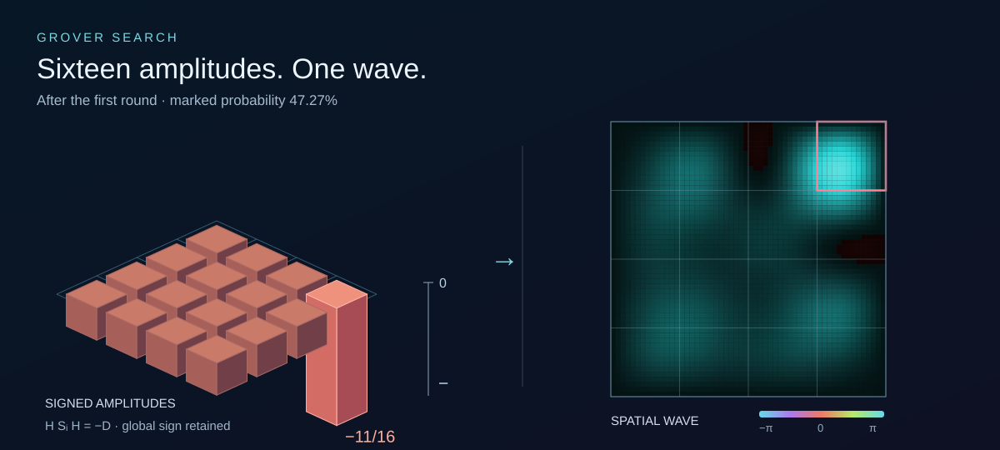
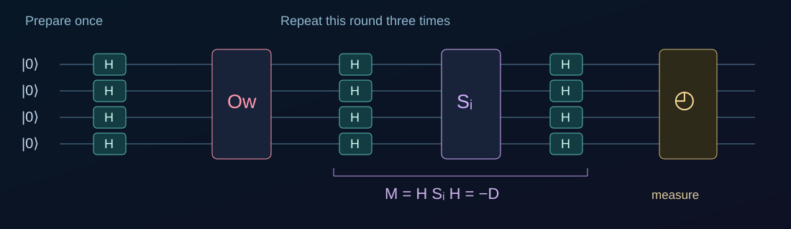
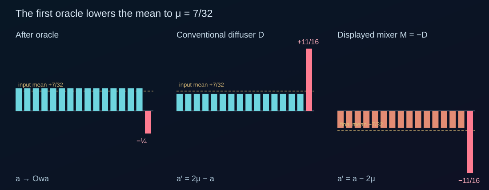
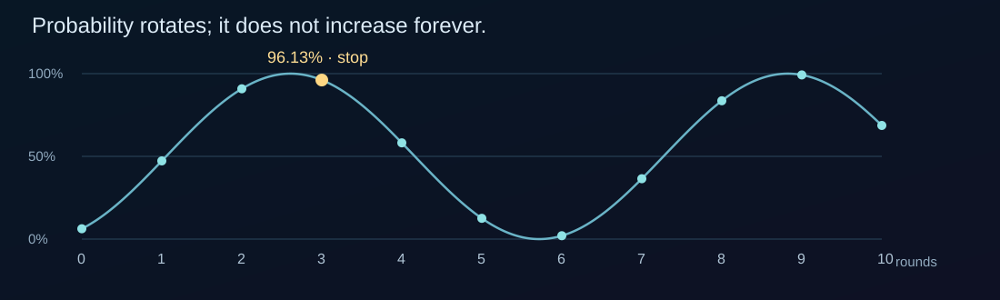
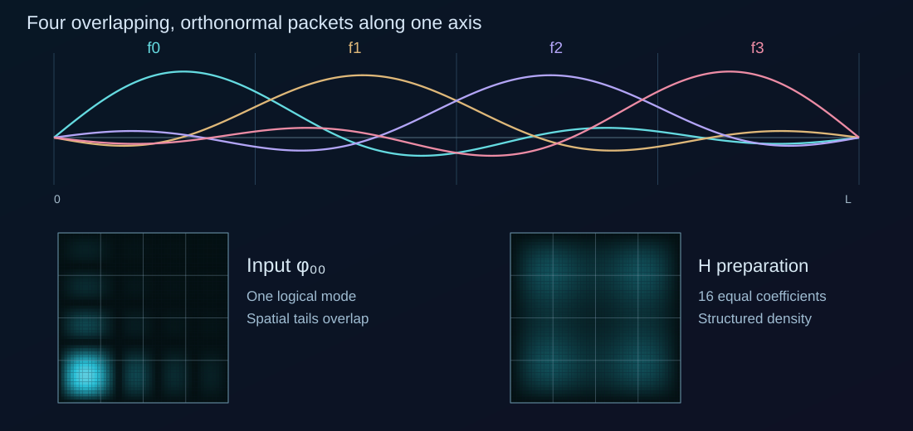
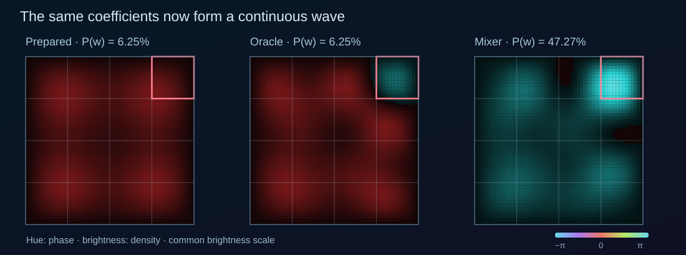
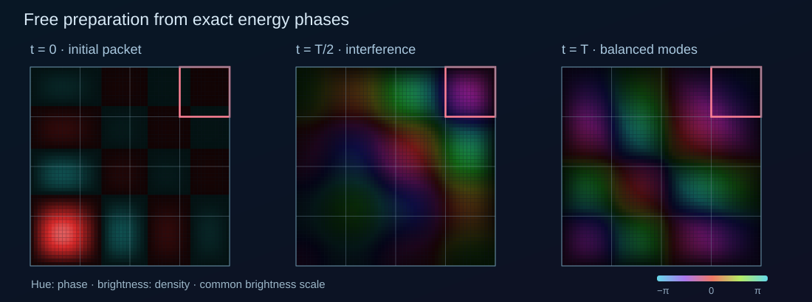
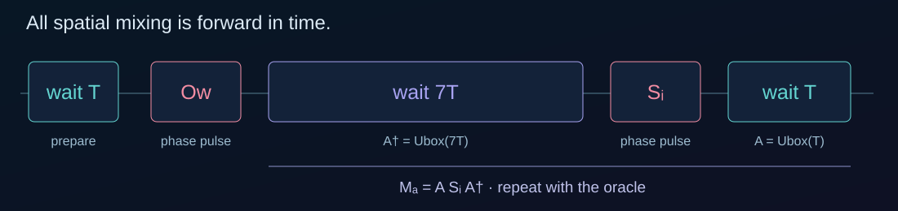
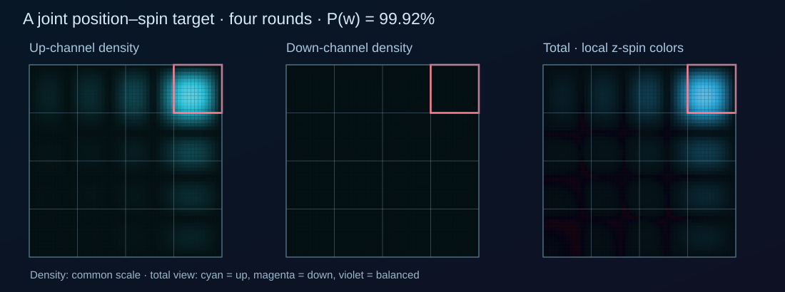

Quantum computing · An illustrated experiment
Grover searchFrom columns to a quantum box
Two reflections turn a quantum state toward the answer. Follow the vector, unpack the gates, and watch the same search unfold in a grid of amplitudes and a wave in a box.

Grover’s search can use free evolution in a box as its mixer. The useful interference comes from the box’s own energy spectrum. We will still need to prepare an input and apply selective phase operations, but the mixing itself can be ordinary Schrödinger evolution between hard walls.
That is where we are going. First, we will draw the search as two reflections of a vector, without opening up the gates. Then we will construct those gates and watch their effect on individual amplitudes. Finally, we will give the amplitudes a spatial form, starting with an explicitly controlled mixer whose motion is easier to follow, before replacing it with free evolution.
01 / Ordinary Grover
Find one answer among \(N\) possibilities
Imagine \(N\) possible answers, with \(N>1\). Exactly one satisfies a condition, and we can test a proposed answer without already knowing which one will pass. Grover’s algorithm turns this ability to recognize the answer into an efficient way to find it.
Write the candidates as orthonormal basis states \(|j\rangle\), with \(j=0,\ldots,N-1\), and call the unknown marked state \(|w\rangle\). A quantum state assigns an amplitude to each candidate:
A measurement gives \(j\) with probability \(|a_j|^2\). Amplitudes themselves can be negative or complex: their relative phases determine how they interfere. For now, assume we start with an equal, real superposition,
Every candidate initially has probability \(1/N\). We are given an oracle that recognizes the answer by reversing its amplitude’s sign, without measuring the state. We will explain how to prepare \(|s\rangle\) and build the other reflection later. First, what do these two reflections achieve?
In the oracle model, one marked item among \(N\) candidates needs order \(N\) classical queries for a fixed high success probability; Grover needs order \(\sqrt N\). This counts calls to the test. The cost of constructing the oracle and accessing any data still belongs to the physical problem. [Grover, 1996]
02 / The mechanism
Two mirrors make a rotation
A state with \(N\) amplitudes might sound difficult to draw. But the unmarked states all start alike, and these two operations treat them alike. Their amplitudes remain equal. Combine those \(N-1\) states into one normalized direction, perpendicular to the marked direction:
The entire search now fits in the plane spanned by \(|r\rangle\) and \(|w\rangle\). Draw \(|r\rangle\) horizontally and \(|w\rangle\) vertically. A unit arrow represents the state; its vertical coordinate is the marked amplitude, and the square of that coordinate is the success probability. The starting arrow \(|s\rangle\) sits at an angle \(\theta=\arcsin(1/\sqrt N)\) above the horizontal. These are directions in state space, not positions inside a box.
First mirror: reverse the marked component
The projector \(|w\rangle\langle w|\) extracts the marked component. Subtracting twice that component reverses it while leaving the unmarked component alone. In our plane, the oracle mirrors the arrow across the horizontal \(|r\rangle\) line: an angle \(\alpha\) becomes \(-\alpha\). The marked probability is unchanged.
Second mirror: reflect about the starting direction
This reflection preserves the component parallel to \(|s\rangle\) and reverses the perpendicular component. Its mirror is the tilted \(|s\rangle\) line. Applied after the oracle, it takes the angle \(-\alpha\) to \(2\theta+\alpha\). Together the two mirrors advance the original arrow by \(2\theta\) per round. Starting at \(\theta\), we reach \(3\theta\), then \(5\theta\), then \(7\theta\).
Our visual example: \(N=16\). For the visualizations, we will use sixteen candidates, arranged later on a \(4\times4\) grid. Each starts with probability \(1/16=6.25\%\), and \(\theta\approx14.48^\circ\). The reflection argument above applies to any \(N>1\).
Each click applies one exact reflection. The moving arrow illustrates the geometry between endpoints; it does not depict a gate’s physical time evolution. Continue past three rounds to see the probability fall again.
After \(k\) complete oracle–diffuser pairs, the conventional state and its success probability are
For our sixteen-state example, the first three rounds give 47.27%, 90.84%, and 96.13%. At three rounds the vector is close to the marked axis; a fourth round carries it farther past that axis and drops the probability to 58.17%. The operation is reversible, so it cannot keep pushing probability upward forever. For general \(N\), the first peak is near \(k=\pi/(4\theta)-1/2\); choose a nearby integer number of rounds. Since \(\sin\theta=1/\sqrt N\), the required number of rounds grows as \(\sqrt N\).
The horizontal coordinate belongs to the normalized sum of the \(N-1\) unmarked states, not to one candidate. Each individual unmarked amplitude is that coordinate divided by \(\sqrt{N-1}\). For our sixteen columns, this factor is \(\sqrt{15}\).
03 / Open up the gates
Prepare once. Undo, flip, and return.
We now know what the reflections should do. How can we build them? For \(N=2^n\), an \(n\)-qubit register supplies the basis states, and a Hadamard on every qubit prepares the equal superposition. In our \(N=16\) example, we use four qubits. Initialize them in the known input \(|i\rangle=|0000\rangle\), and apply a Hadamard to each qubit. The single-qubit gate and the whole-register operator are
This supplies the equal starting vector used above. Preparation is performed once, before the repeated search rounds. We also assume a coherent oracle, a known phase flip on \(|i\rangle\), and a final measurement in the computational basis. There are no measurements between gates.
For the oracle, define \(f(j)=1\) for the solution and 0 otherwise. A reversible test \(|j,b\rangle\mapsto|j,b\oplus f(j)\rangle\) becomes a phase oracle when the auxiliary qubit is \(|-\rangle=(|0\rangle-|1\rangle)/\sqrt2\). It leaves that auxiliary state unchanged and kicks a sign onto the tested register: \(O_w|j\rangle=(-1)^{f(j)}|j\rangle\). We can therefore omit the auxiliary qubit from the diagram. Selecting a goal in a demo programs this test; the search algorithm is given the oracle, not the answer’s index.
Build a reflection from a known phase flip
It is easier to reverse one known basis component than to directly address a tilted superposition. Define
- Undo preparation, \(H^\dagger\). Bring the prepared direction \(|s\rangle\) back to the input direction \(|i\rangle\), carrying every component of the current state along with it.
- Flip the initial-state component, \(S_i\). Reverse the amplitude along \(|i\rangle\) and leave every component perpendicular to it unchanged.
- Apply preparation again, \(H\). Carry the reference direction back from \(|i\rangle\) to \(|s\rangle\).
This is the “rotate back, flip, rotate forward” idea. More precisely, we conjugate a simple reflection by the preparation unitary. Undoing preparation sends \(|s\rangle\) to \(|i\rangle\); it does not reset an arbitrary search state to \(|i\rangle\). The intermediate states can leave the two-dimensional search plane, and \(H\) itself need not be a literal rotation within that plane.
In time order the gates are \(H^\dagger\to S_i\to H\). Since \(H^\dagger=H\), the same Hadamard appears on both sides. Matrix multiplication acts from right to left:
The minus sign changes only the global phase. Our reference gate \(S_i\) flips the initial component, so \(M\) flips the prepared direction \(|s\rangle\). This gives \(M=-D\): every output amplitude is the negative of the corresponding output from \(D\). Multiplying the whole state by \(-1\) leaves relative phases and all measurement probabilities unchanged. After \(k\) full rounds, the two conventions differ by \((-1)^k\). The opening vector diagram uses \(D\); the columns and wave views retain the signs produced by their gates. [Operator conventions]
Here is the sandwich as simple real-vector geometry. The gold arrow is the reference \(|s\rangle\); the violet line perpendicular to it is the mirror for our \(M\). Turn the whole picture until the reference lines up with the horizontal initial-state axis, perform the simple reflection, then turn back.
Call the turn \(R\), with \(R|i\rangle=|s\rangle\). The construction is \(RS_iR^{\mathsf T}\): the rightmost operation acts first. This illustrates the same complete reflection as \(HS_iH\). Choose an example vector and watch the reference and mirror travel with it.
- |v0⟩Input vector
- RT1 · Align reference
- Si2 · Reflect
- R3 · Turn back
v = +0.940|i⟩ +0.342|u⟩
Turn the basis → reflect → turn back. Pause or scrub to follow the picture; Previous plays backward. The grey arrow keeps the original vector in the current basis.
How the real picture connects to the Hadamard circuit
For the sixteen-state example, \(|u\rangle\) is the normalized sum of the fifteen states other than \(|i\rangle\), and \(|s\rangle=(|i\rangle+\sqrt{15}|u\rangle)/4\). In this real plane we choose the rotation
Both \(R\) and \(H\) send the initial direction to \(|s\rangle\). Conjugating \(S_i\) with either gives the same complete reflection:
The widget uses \(R\) to make the change of basis visible as a simple turn. Its moving arrows illustrate the geometry between stages. The circuit and column demo retain their actual Hadamard gates.

The two Hadamards also mix amplitudes along the way. The column view below lets us follow those intermediate states, gate by gate.
04 / Try the abstract search
Follow the amplitudes, gate by gate
Now separate the vector into its sixteen basis amplitudes. Arrange the states on a \(4\times4\) grid: the first two bits label column x and the last two label row y, so \(j=4x+y\). The lower-left state is our input \(|0000\rangle\); the upper-right state is our example target \(|1111\rangle\). This grid arranges labels, with no physical distance between them yet. Column heights show real amplitudes, so a column below zero does not mean negative probability.
For uniform \(|s\rangle\), \(D\) reflects each amplitude about the arithmetic mean \(\mu\). The two operators act as follows:
After the first oracle, fifteen amplitudes are \(+1/4\) and the marked amplitude is \(-1/4\), giving a mean of \(7/32\). Our mixer \(M\) takes them to \(-3/16\) and \(-11/16\), respectively, and the marked probability becomes \((11/16)^2=47.265625\%\). No gate needs to measure the mean: these are fixed linear operators.

Start with one column. Press Next step to prepare the equal superposition, then apply the oracle. Leave Combine off to see each of the three mixer gates. After the first \(H\) inside that mixer, the input amplitude is \(+7/8\), while the others are \(\pm1/8\). \(S_i\) flips \(+7/8\) to \(-7/8\), and the final \(H\) collects these contributions into the amplified result.
Turn Combine on before entering a mixer to go straight from its input to its output. This uses the same complete operator \(M\), with a direct continuous unitary animation between its endpoints. It does not visit the hidden \(H\text{–}S_i\text{–}H\) checkpoints. During animations the state can be complex; choose the imaginary view to see the part that real column heights leave out.
Loading the column view. The figures and table below also show the exact checkpoint values.
Drag to orbit; scroll or pinch to zoom. The measurement symbol lights at the recommended stop. You can keep stepping.
The gold mean plane travels with the columns in the combined animation. All real column tips shift by \(-2\mu\), which is \(-7/16\) in the first round, and their mean moves from \(+7/32\) to \(-7/32\). The solid plane shows the current mean; the dashed destination marks its final value.
Why repeating works—and why to stop
Return to the two-dimensional picture at complete round boundaries. Using the same \(|r\rangle\) and \(\theta\) as the opening diagram, the state after \(k\) rounds is
After three rounds we are close to the marked direction. Another round carries us past it. The algorithm is a reversible rotation, so it cannot keep increasing the marked probability forever.

| Checkpoint | Marked \(a_w\) | Each unmarked \(a_j\) | \(P_w\) |
|---|---|---|---|
| Prepared | +0.250000 | +0.250000 | 6.25% |
| Round 1 | −0.687500 | −0.187500 | 47.27% |
| Round 2 | +0.953125 | +0.078125 | 90.84% |
| Round 3 · measure | −0.980469 | +0.050781 | 96.13% |
| Round 4 · overshoot | +0.762695 | −0.166992 | 58.17% |
Even at the recommended stop the unmarked amplitudes need not have the same sign as the marked one. Signs record the full rotation; probability is their squared magnitude. In the full demo, Run full search stops at the first recommended peak. Next step continues beyond it, and Previous step returns to the preceding checkpoint.
What exactly is interpolated in the column animation?
For any Hermitian reflection \(G\text{ with }G^2=I\), the animation uses \(U(p)=(I+G)/2+e^{-i\pi p}(I-G)/2\), for \(0\le p\le1\). At the endpoints it is \(I\) and \(G\), and it preserves the norm throughout. For a real input to a combined mixer, the real heights follow \(a_j(p)=a_j(0)-2\mu\sin^2(\pi p/2)\). Their imaginary parts are \(-\mu\sin(\pi p)\). This is a chosen path for visualizing a discrete gate, not a claim about how every quantum device executes it. The article’s compact viewer uses the Ordinary-Grover branch’s state-vector and 3D rendering code.
The arithmetic-mean formula assumes our input \(|0000\rangle\). Choosing another input in the full demo prepares \(H|i\rangle\) with different signs. The general rule then subtracts \(2s_j\langle s|\psi\rangle\) from each amplitude; the reference guide becomes a set of per-column tiles.
05 / From coefficients to space
Give each basis state a wave packet
Now put one quantum particle in a square with hard outer walls. We need sixteen distinguishable states, but they do not have to be four separate physical qubits. We can encode them in sixteen orthonormal spatial wave packets.
Take four sine modes along each axis. On a box of side \(L\), the one-dimensional modes are \(u_n(x)=\sqrt{2/L}\sin(n\pi x/L)\), \(n=1,\ldots,4\). Combine them into four packets \(f_x\), each with its main peak near the center of a different quarter of the interval. Products of two such packets give our \(4\times4\) basis:
The integers \(x,y\) label packets; the capital \(X,Y\) denote continuous physical coordinates. The coefficients \(c_{xy}\) play exactly the role of the sixteen amplitudes in our column picture. Orthonormality makes \(\int|\psi|^2\,\mathrm dX\,\mathrm dY=\sum_{x,y}|c_{xy}|^2\).

The inner grid lines are labels, not additional walls. The packets overlap in space while remaining orthogonal as functions. Consequently, the probability of the logical outcome \(|x,y\rangle\) is \(|c_{xy}|^2\), whereas the probability of finding the particle inside the corresponding drawn square is the integral of \(|\psi|^2\) over that square. The two readouts are different.
A measurement that distinguishes the packet modes would read out the logical search result. A simple position measurement reads out position instead. This distinction matters when comparing a grid percentage with the fraction of displayed particles inside a square.
The precise packet basis
For a \(g\times g\) grid, \(f_j(X)=\sum_{n=1}^{g}T_{jn}u_n(X)\), where \(T_{jn}=\sqrt{2/g}\sin[(j+1/2)n\pi/g]\) for \(n\lt g\), and \(T_{jg}=\sin[(j+1/2)\pi]/\sqrt g\). This real orthogonal transform preserves normalization. The figures use \(g=4\) and \(L=1\). Every packet vanishes at the outer walls; finite sums of sine modes do not have compact support inside one cell.
06 / The simplest wave picture
Keep the Hadamard. Watch the wave.
In the first wave version, called MultiRegion, we apply the same four-qubit Hadamard to these packet coefficients. Begin with \(\varphi_{00}\), prepare with \(H\), mark \(\varphi_{33}\), then apply \(H^\dagger\), \(S_i\), \(H\). At every completed gate, the coefficient vector agrees with ordinary Grover. We have changed its representation, not the search rule.
To show a continuously moving wave between gates, this model uses an ideal coupling Hamiltonian, written \(\mathcal H_{\mathrm{mix}}\) to distinguish it from the gate \(H\):
At \(p=1\) this gives \(H\) exactly. The inverse interval follows \(U(-p)\): the endpoint is again \(H\), but the continuous path runs with the opposite coupling. The sine modes give us a spatial basis here; their free kinetic-energy phases are not added during these controlled gates.
Oracle and input-reference pulses rotate only one logical coefficient through half a turn:
Although a single coefficient changes phase, spatial density can change because its packet overlaps other packets. The phase creates a changing interference pattern. A mode projector is therefore not equivalent to painting a local potential onto one square.

The golden dots visualize probability transport. Their initial positions sample \(|\psi|^2\). For this nonlocal coupling, the demo chooses a current \(\mathbf j=\nabla\chi\) satisfying \(\nabla^2\chi=-\partial_t\rho\) and zero normal current at the walls, where \(\rho=|\psi|^2\). Moving dots with \(\mathbf v=\mathbf j/\rho\) carries that density consistently. This is a specified curl-free transport rule; ordinary phase-gradient Bohmian guidance does not automatically apply to an arbitrary nonlocal gate. [Generalized guidance]
Explore the controlled wave model → Start with phase colors on. Step through the first oracle and compare the changing density with the unchanged marked-mode percentage.
07 / The box becomes the mixer
Replace H with free evolution
Nothing in amplitude amplification requires the preparation operator to be a Hadamard. Let \(A\) be any unitary preparation and \(|s_A\rangle=A|i\rangle\). Undo it, flip the input state, and apply it again:
If preparation gives marked probability \(1/16\), the same Grover amplification curve follows—even if the sixteen prepared amplitudes have different phases. This is the bridge from the qubit circuit to our free box. [Amplitude amplification]
Inside the square, set the potential to zero and keep the hard walls. The Hamiltonian and sine-mode energies are
Here \(n\) and \(\ell\) are positive integer mode numbers and \(m\) is the particle mass. Each sine coefficient simply acquires its own phase, \(b_{n\ell}(t)=e^{-iE_{n\ell}t/\hbar}b_{n\ell}(0)\). The reconstruction in the packet basis can look complicated, but its evolution is known exactly.
For four packets per axis, wait \(T=\pi\hbar/(4E_1)\). The first four one-axis energy phases are \((z,-1,z,1)\), with \(z=e^{-i\pi/4}\). In our packet basis the resulting one-dimensional matrix is
Every entry of \(A\) has magnitude \(1/4\). A localized input therefore evolves into equal logical probabilities, with definite relative phases. The box itself performs balanced preparation and mixing. We do not replace its wave by a Hadamard-shaped interpolation.

Undoing the mixer by waiting forwards
Unlike \(H\), this \(A\) is not its own inverse. But the full box spectrum revives at \(T_{\mathrm{rev}}=2\pi\hbar/E_1=8T\). Every mode then returns with exactly its original phase. We can implement \(A^\dagger\) with positive-time free evolution:
The inverse really takes seven times as long as the forward mixer. No time reversal is needed. Preparation is one wait of \(T\); a round is oracle → wait \(7T\) → input phase flip → wait \(T\). At 1× playback, \(T\) is 2.4 seconds and the inverse interval is 16.8 seconds.

After each complete round, the marked-mode probabilities are again 47.27%, 90.84%, and 96.13%. The intermediate wave is different, and a plain horizontal arithmetic-mean plane is no longer the right picture: the reflection is about the actual complex vector \(|s_A\rangle\).
During these free intervals the arrows show the usual scalar Schrödinger current, and the particles follow ordinary Bohmian guidance:
The dots are an ensemble of possible initial positions, not extra search registers or little agents checking different answers. More particles make the distribution easier to see; they do not change the quantum algorithm. Their paths make the transfer of density visible.
Explore the free box → Compare preparation with the controlled version, then watch the much longer inverse wait. The same final search probabilities emerge from a different interference pattern.
Changing the grid size
The full demos support \(2\times2\) through \(5\times5\). Write \(g\) for the number of packets per axis, so the scalar search has \(N=g^2\) states. Free preparation uses \(T=T_{\mathrm{rev}}/(2g)\) and its inverse waits \((2g-1)T\), with the box and mass fixed. The \(3\times3\) and \(5\times5\) controlled versions use a balanced Hermitian transform \(B_{(x,y),(u,v)}=e^{2\pi i(xv-yu)/g}/g\) instead of a qubit Hadamard. They are amplitude amplification on 9 or 25 modes, rather than whole registers of qubits.
The query advantage and the encoding’s physical resources are separate questions. Representing \(N\) candidates by \(N\) spatial modes does not by itself provide a scalable replacement for a \(\log_2N\)-qubit device: preparing, controlling, resolving, and measuring those modes also requires resources.
08 / One more degree of freedom
Two amplitudes at every position
Finally, give the particle spin \(\tfrac12\). Every spatial packet can now carry an up and a down amplitude. Our \(4\times4\) grid encodes 32 joint states \(|x,y,\sigma\rangle\), and the wave becomes a two-component spinor:
Mix position with the same free-box propagator and mix spin with a uniform rotation. With \(R_y(\alpha)=e^{-i\alpha\sigma_y/2}\), where \(\sigma_y\) is the Pauli y matrix, preparation and its inverse are
The spin rotation is an imposed spin-only drive. The spatial motion during mixing is still free; the entire operation also includes this drive. The oracle flips one joint position–spin mode, and \(S_i\) flips the chosen input position–spin mode. The reflection argument is unchanged.

Preparation gives \(1/32\) in every joint mode. The first recommended stop is now four rounds, at approximately 99.9182% marked-mode probability. A position measurement alone does not distinguish up from down. The demo therefore separates joint-mode probabilities from the spatial probability inside the goal box, which includes both spin components.
Spin changes the current, too
Spin introduces an additional contribution to the probability current, which can change trajectories without changing the density evolution. The position current used during free evolution with the uniform spin drive includes the convective term and this spin contribution:
In the planar model, the spin term is \((\hbar/2m)(\partial_YM_z,-\partial_XM_z)\), with \(M_z=|\psi_\uparrow|^2-|\psi_\downarrow|^2\). It is divergence-free: it can add circulation and change particle trajectories without changing the density’s continuity equation. After a selective oracle, position and spin can become entangled; a particle is not assigned a permanent little “up” or “down” tag. [Pauli current]
Total · spin colors uses cyan and magenta for opposite local z polarizations. A spinor has no single scalar phase, so that total view has a different legend from the individual up/down phase views. Switch the current arrows between total, transport, and spin current to see which part produces which flow.
The scope of the spin trajectories
The simulation uses the planar components of the Pauli current; it does not simulate a transverse wavefunction or claim that arbitrary three-dimensional trajectories remain in the plane. During ideal nonlocal phase pulses it adds a gradient correction \(\nabla u\) satisfying \(\nabla^2u=-\partial_t\rho-\nabla\cdot\mathbf j_{\mathrm P}\), with zero normal derivative at the walls. This retains spin circulation while enforcing continuity. It is a specified extension for these ideal gates, rather than a unique experimental realization of an oracle. The wave coefficients evolve exactly in the retained mode space; particle integration and sampled current fields have numerical error.
Explore the spin version → Select a joint goal, run four rounds, and compare the spin-resolved result with the total spatial density.
The experiments
Explore all four representations
The search structure stays the same: prepare once, then alternate an oracle with a reflection built from preparation and its inverse. What changes is the representation of the states and the operation that mixes them.
| Model | States | Preparation | Flow of the dots |
|---|---|---|---|
| Ordinary columns | 16 basis states | \(H=H_1^{\otimes4}\) | No spatial trajectories; columns show amplitudes. |
| Controlled wave | 16 spatial modes | The same \(H\), acting on packet coefficients | A chosen gradient current \(\mathbf j=\nabla\chi\) preserves continuity throughout the controlled gates. |
| Free box | 16 spatial modes | \(A=U_{\mathrm{box}}(T)\) | Schrödinger current during free evolution; chosen gradient transport during phase pulses. |
| Free box + spin | 32 joint position–spin modes | \(U_{\mathrm{box}}(T)\otimes R_y(\pi/2)\) | Planar Pauli current, including spin circulation; a gradient correction enforces continuity during phase pulses. |
Both free-box models still assume ideal mode-selective oracle and reference phase pulses. The spin model also applies a uniform spin drive. The full demos offer other grid sizes.
Choose a simulation to load it here. The wave demos need WebGL2.
Open full column demo ↗Choose a view above to start exploring.
Changing the view starts that simulation afresh. Each full demo keeps its own controls and gate implementation. On a small screen, use the full-page link for more room.
Sources and further reading
The packet basis, free-box matrix, numerical figures, and four demos in this article come from the Grover visualization project. The free-box result above follows directly from its sine spectrum and the displayed packet transform. The local copies preserve the distinct branch implementations.
- Lov K. Grover, A fast quantum mechanical algorithm for database search (1996): the original search algorithm and inversion about the average.
- Gilles Brassard, Peter Høyer, Michele Mosca, and Alain Tapp, Quantum Amplitude Amplification and Estimation (2000): preparation by a general unitary A.
- IBM Quantum’s Grover operator documentation: circuit decomposition and the global sign of the zero-state reflection.
- Marek Nowakowski, The Quantum Mechanical Current of the Pauli Equation (1998; published 1999): the spin contribution obtained from the nonrelativistic limit of the Dirac current.
- Ward Struyve and Antony Valentini, De Broglie–Bohm Guidance Equations for Arbitrary Hamiltonians (2008): constructing conserved currents beyond the usual local Hamiltonian.
Comments and questions
Share a thought about this post or ask a question.